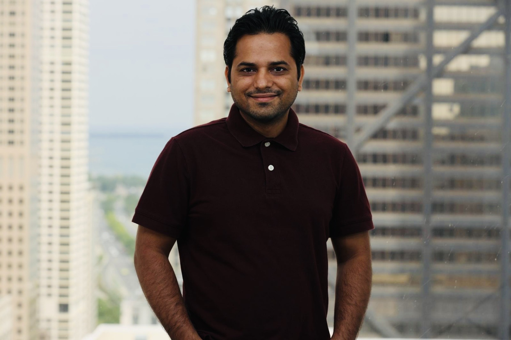

Assistant Professor (Tenure-Track), Department of Computer Science, University of South Dakota

About Me
My primary research focuses on developing AI algorithms for medical imaging, covering upper and lower GI tract, lung and liver tumors, and predictive modeling for radiation therapy. I also investigate organ-at-risk assessment and dose prediction to elevate the accuracy and effectiveness of radiation therapy. In the past, I have developed algorithms for colonoscopy/endoscopy. One of our recent algorithms, ColonSegNet and data, Kvasir-SEG, has been adopted by NVIDIA Clara. I am highly optimistic about the potential of AI tools to function as an additional diagnostic support for radiologists, enabling enhanced healthcare quality and informed decision-making.
Recent News
2 papers are accepted at the 2024 CVPR Workshop.
Acting as an associate editor for Frontiers in Radiation Oncology and Medical Physics Journal.
One paper was accepted at the ICML workshop in 2023.
Our Kvasir-SEG dataset was mentioned in the “Artificial Intelligence Index Report 2022” from Stanford University.
Received Junior Distinguished Research and Development (R&D) Award for the year 2022 by the IEEE Chicago Section Award committee.
Received the first-ever Paper with Code Contributor Award.
MICCAI 2022 Student Travel Award (Co-author).
Mahatma Gandhi Scholarship, Government of India (2006-2007).
Mission
My lab is driven by a clear mission: to democratize trustworthy medical AI, integrate AI systems into everyday clinical practice, and create global impact through open science.
I am currently leading multi-institutional collaborations across academia, industry, and healthcare systems to develop next-generation AI tools that empower physicians, reduce diagnostic burden, and advance equitable access to healthcare.
About My Research
My primary research goal is to address complex real-world challenges in medical imaging by developing robust, explainable, and trustworthy artificial intelligence (AI) solutions that are scalable, energy-efficient, and ready for clinical translation.
With a strong foundation in machine learning, deep learning, and biomedical image analysis, I lead research that spans the development of advanced neural architectures, large-scale open-access datasets, and AI systems designed to enhance diagnostic workflows in gastrointestinal endoscopy, radiology, and surgical settings.
Core Research Areas
🧠 Gastrointestinal AI: Advanced solutions for IBD, ERCP, and colonoscopy imaging.
Creator of HyperKvasir, KvasirCapsule, PolypDB; algorithms for polyp detection, VCE classification, automated reporting.
🩻 Radiological Imaging: Deep learning-based segmentation of liver, spleen, pancreas, lung, prostate, and retina (CT/MRI).
Includes organ-at-risk delineation and radiation therapy dose prediction.
🧬 Multimodal & Foundational AI: Vision-language and reasoning models integrating imaging with clinical texts.
Language-guided diagnostics and explainable, automated decision-making.
⚙️ Efficient & Ethical AI: Lightweight real-time models (e.g., ColonSegNet in NVIDIA Clara).
Green AI, federated learning, semi-supervised learning, ethical and human-in-the-loop systems.
🎯 Applied AI in Diverse Domains: Surgical tool tracking, Alzheimer’s classification, retina/skin lesion segmentation, sports biomechanics, and remote patient monitoring.
🌍 Developed benchmark datasets used globally for segmentation/classification tasks
Recognitions & Leadership
🏆 Best Paper/Poster Awards at IEEE ICEIC (2018), IAPR (2024), IEEE CBMS (Finalist)
🏅 IEEE Chicago Distinguished R&D Award (2025), Meta's Paper with Code Contributor Award
⭐ IEEE TMI Distinguished Reviewer (2023–2024)
🛂 EB1A Green Card Holder (Extraordinary Ability)
📚 Guest Editor: Medical Physics, Frontiers in Oncology, Diagnostics
🧪 Organizer of FAIMI-EPIMI (MICCAI), MedAI Challenge, Kvasir Dataset Series
Research Interests
Medical image analysis, Medical image segmentation, Deep learning, Radiation therapy, Dose Prediction, Gastrointestinal endoscopy & wireless capsule endoscopy, Polyp segmentation, detection, and localization, Surgical data science, Prostate and lung cancer segmentation, Robust and trustworthy AI systems, Ethical AI, Sport Analytics